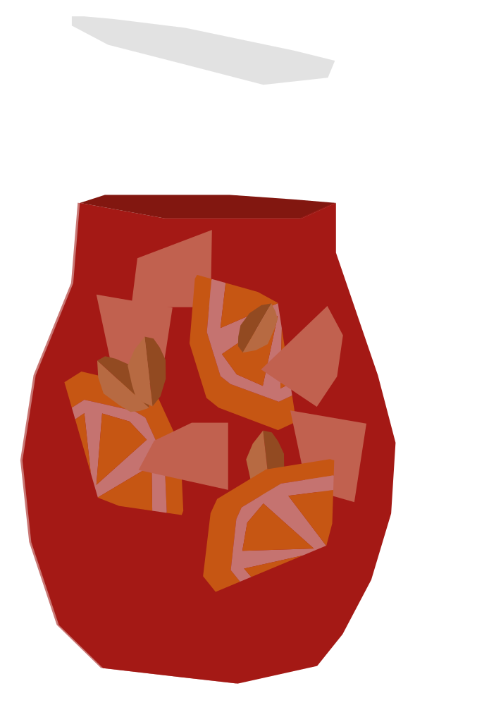

¿Rojo como la sangre?
Deriva del hipocrás medieval, una mezcla de vino con especias que se bebía como tónico. Su nombre alude al color rojo sangre del vino tinto, y se popularizó internacionalmente durante la Expo de Nueva York de 1964.
RECETA
- 150 ml vino tinto
- 30 ml jugo de naranja
- 15 ml brandy
- 15 ml jarabe simple
- 1/4 naranja
- 1/4 limón
- 50 ml agua mineral
- Hielo
- Corta la naranja y el limón en rodajas y colócalos en una jarra.
- Agrega el vino, jugo de naranja, brandy y jarabe simple.
- Mezcla bien y deja reposar unos minutos.
- Agrega hielo y completa con agua mineral.
- Mezcla suavemente antes de servir.
Vaso: Jarra y vaso bajo